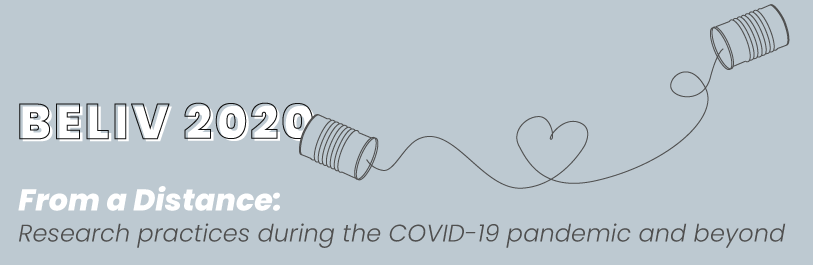

Session 1: Welcome, Keynote, Tutorials (9:00 - 10:40)
9:00 - 09:10 WelcomeMichael Sedlmair
9:10 - 10:00 Keynote
Jon Tennant --- Reproducibility: Or, how I learned to stop worrying and love Open Science
Jon Tennant --- Reproducibility: Or, how I learned to stop worrying and love Open Science
Abstract: You can barely go anywhere within research these days without hearing the term ‘reproducibility crisis’. It is becoming more and more common for meta-analyses of research to fail to reproduce key discoveries within the scholarly literature. At the same time, researchers are under increasing pressure to ‘publish or perish’, more ...
10:00 - 10:40 Mini-tutorials based on these papers:
10:00 - 10:20 Paper — Towards Designing Unbiased Replication Studies in Information Visualization
Poorna Talkad Sukumar, Ronald Metoyer
Poorna Talkad Sukumar, Ronald Metoyer
10:20 - 10:40 Paper — Skipping the Replication Crisis in Visualization: Threats to Study Validity and How to Address Them
Robert Kosara, Steve Haroz
Robert Kosara, Steve Haroz
BREAK 10:40 - 11:00
Session 2: Panel — A Roadmap For Replication in Visualization (11:00 - 12:40)
11:00 - 11:20 Author panelists:
11:00 - 11:10 Paper — Open Practices in Visualization Research
Steve Haroz
Steve Haroz
11:10 - 11:20 Paper — Requirements for Reproducibility of Research in Situational and Spatio-Temporal Visualization
André Calero Valdez, Anne Kathrin Schaar, Julian Hildebrandt, Martina Ziefle
André Calero Valdez, Anne Kathrin Schaar, Julian Hildebrandt, Martina Ziefle
11:20 - 11:40 Invited panelists:
Danielle Albers Szafir
Jason Dykes
Nils Gehlenborg
Paul Rosenthal
11:40 - 12:40 Q/A and Open Discussion
BREAK 12:40 - 14:20
Session 3: Paper Presentations + Break-out Sessions (14:20 - 16:00)
Each paper will first be presented for 5 minutes. After that each paper author will lead a break-out session in a corner of the room, before we come back together and present the results of the break-out groups to the larger audience.14:20-14:50 5-minute pitches
14:20 - 14:25 Paper — Towards Characterizing Domain Experts as a User Group
Yuet Ling Wong, Krishna Madhavan, Niklas Elmqvist
14:25 - 14:30 Paper — A Micro-Phenomenological Lens for Evaluating Narrative Visualization
Stanislaw Nowak, Lyn Bartram, Thecla Schiphorst
Stanislaw Nowak, Lyn Bartram, Thecla Schiphorst
14:30 - 14:35 Paper — From Taxonomy to Requirements: A Task Space Partitioning Approach
Mai Elshehaly, Natasha Alvarado, Lynn McVey, Rebecca Randell, Mamas Mamas, Roy Ruddle
Mai Elshehaly, Natasha Alvarado, Lynn McVey, Rebecca Randell, Mamas Mamas, Roy Ruddle
14:35 - 14:40 Paper — How to evaluate an evaluation study? Comparing and contrasting practices in vis with those of other disciplines
Anamaria Crisan, Madison Elliott
Anamaria Crisan, Madison Elliott
14:40 - 14:45 Paper — The garden of forking paths in visualization: A design space for reliable exploratory visual analytics
Xiaoying Pu, Matthew Kay
Xiaoying Pu, Matthew Kay
14:45 - 14:50 Improving Accessibility, Replicability, and Reproducibility through Open Practices
Steve Haroz, Andre Calero-Valdez
Steve Haroz, Andre Calero-Valdez
14:50-15:20 Discussion in 6 breakout groups
15:20-16:00 Short reports of results of the 6 breakout groups
BREAK 16:00 - 16:20
Session 4: Paper Presentations + Break-out Sessions (16:20 - 18:00)
Each paper will first be presented for 5 minutes. After that each paper author will lead a break-out session in a corner of the room, before we come back together and present the results of the break-out groups to the larger audience.16:20-16:45 5-minute pitches
16:20 - 16:25 Paper — Lowering the Barrier for Successful Replication and Evaluation
Hendrik Lücke-Tieke, Marcel Beuth, Philipp Schader, Thorsten May, Jürgen Bernard, Jörn Kohlhammer
Hendrik Lücke-Tieke, Marcel Beuth, Philipp Schader, Thorsten May, Jürgen Bernard, Jörn Kohlhammer
16:25 - 16:30 Paper — A case for cognitive models in visualization research
Lace Padilla
Lace Padilla
16:30 - 16:35 Paper — Heuristic Evaluation in Visualization: an empirical study - Position paper
Beatriz Sousa Santos, Samuel Silva, Paulo Dias
Beatriz Sousa Santos, Samuel Silva, Paulo Dias
16:35 - 16:40 Paper — Reflecting on the Evaluation of Visualization Authoring Systems
Donghao Ren, Bongshin Lee, Matthew Brehmer, Nathalie Riche
Donghao Ren, Bongshin Lee, Matthew Brehmer, Nathalie Riche
16:40 - 16:45 Replication of Qualitative Research in Visualization
Poorna Talkad Sukumar, Robert Kosara
Poorna Talkad Sukumar, Robert Kosara
16:45-17:25 Discussion in 6 breakout groups
17:25-17:55 Short reports of results of the 6 breakout groups
17:55 - 18:00 Closing